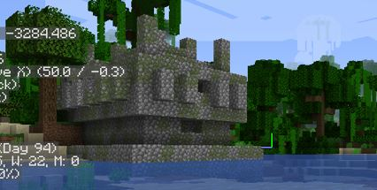
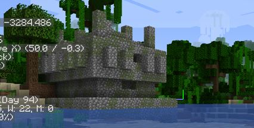

My First MC World
When I was still in Elementary school, I used to play Minecraft Pocket Edition or MCPE in my father's phone. I would spend hours building houses, farms, hotels, and even a roller coaster! Sadly, I don’t have any screenshots of my past builds.
During the lockdown last year, my friends, Harvey and Niven, introduced me to TLauncher. It is a program or “launcher” that lets you play Minecraft in your desktop for free! So, I downloaded it right away. We did play together for a short time in one of their servers, but it seemed like I didn’t contribute anything because they have gathered and built almost everything they need. Since I didn't felt content in playing in their server, I decided to play solo in my own world.
Since it was my very first time playing solo in Minecraft PC. I set my goal to defeat the "boss" of the game, the Ender Dragon! The first thing I did was to mine for resources. I found and gathered a lot of iron, gold, and the most valuable resource of all, diamonds! After exploring for a bit, I found a ruined portal. I fixed it and went in, feeling very excited to see what I can find! Though, after a few jumps going to the nether, I accidentally fell and died in lava. I was distraught. I have lost all my stuff because of that lava! ARRGGGHH! I was soooo bummed out. I had spent hours finding those resources, only to lose it all to lava. When I told my brother this, he laughed so hard it made me even more annoyed at myself. Though I felt like giving up, I gathered (no pun intended) myself up and continued trekking to achieve my goal. So, I restarted and plopped down to another world that changed my life forever.
When I joined the world, I started to gather resources AGAIN. After exploring the surrounding areas, I found a village! I set up a base and continued exploring the nether realm. With some luck, I managed to find a nether fortress straight away. This was HUGE. This structure is SUPER rare to come by and is important to finish the game. After getting what I needed from the fortress, I continued exploring my world. While wandering aroun, I had found a desert temple, jungle temple, an underwater ship, and a treasure chest. While epxloring, I have found my first woodland mansion, a very difficult structure to loot, and successfully explored it.
After getting a ton of different armor and loot, I was finally ready. I constructed a railway system that will lead me to the end portal so that I could travel easily from my base to it. Finally, it's time. I had only one goal in mind: TO DEFEAT THE ENDER DRAGON.
That was one of the best moments of my minecraft gaming experience. Defeating the Ender Dragon made me realized I didn’t know what else I could do in my world. Since I had nothing else to do, I built a trading hall, got a full set of netherite armor, the most OP armor and weapon set, and started to complete the different achievements in the game.
Though, I have to be honest, after my fight with the ender dragon, the game became pretty boring. I had a whole world to myself, but I didn’t know what else to do. I got bored with building things I thought I wanted to build. After that, I could only played Minecraft every now and then, whenever I felt like it. Soon after that, I stopped playing completely.
HOWEVER, a few months later, I was thrusted back into the world of Minecraft with my Cesium classmates.
 
